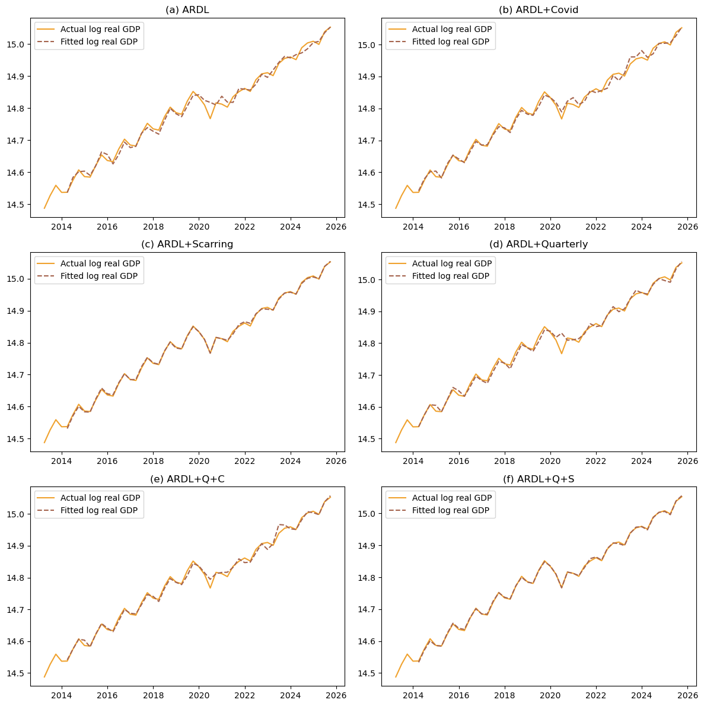
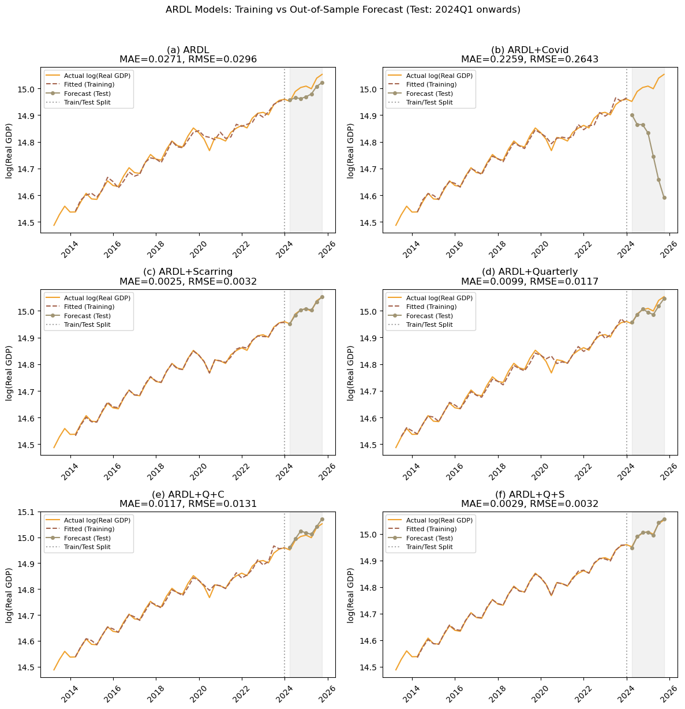

import pandas as pd
from pandas.tseries.offsets import QuarterEnd
import numpy as np
import statsmodels.api as sm
import matplotlib.pyplot as plt
import matplotlib.dates as mdates
import seaborn as sns
import statsmodels.api as sm
from statsmodels.tsa.vector_ar.vecm import VECM, select_order, select_coint_rank
from statsmodels.tsa.api import VAR
from statsmodels.tsa.stattools import adfuller
from statsmodels.tsa.ardl import ARDL
from sklearn.metrics import mean_squared_error
from sklearn.linear_model import Ridge
import statsmodels.formula.api as smf
from statsmodels.tsa.ardl import ardl_select_order
from datetime import datetime
import re
import io
import os
pd.options.display.max_seq_items = 4000 ## This is only for cosmetics.Introduction
This is the notebook file to replicate our macroeconometrics approach. This notebook does not contain the blackmarblepy application. Source data is from blackmarblepy for nightlight, and BPS. If you happens to find any issues, you can find Tim via timothy.ginting@dewanekonomi.go.id. We are so greatful for any feedbacks and comments.
You will see the following sections in this notebook:
- Real GDP and quarterly night light index (NTL) graph;
- OLS and residuals;
- ADF test and Johansen Cointegration test;
- VECM graph;
- VAR graph; and
- ARDL graph.
We do those steps for both quarterly dataset and growth dataset.
We are still working on the regional regression.
In [20]:
Quarterly Real GDP vs Quarterly NTL.
Dataset
turn on the last line to see the dataframe.
In [21]:
## Data prep
### Creating data
ntl=pd.read_excel('data/ntl_monthly_avg_2012-2025.xlsx')
gdp=pd.read_excel('data/GDP_YoY_Quarterly_12_25.xlsx')
### Make time index
ntl.Date=pd.to_datetime(ntl['Date'])
ntl['qtr']=ntl['Date'].dt.quarter
ntl['year']=ntl['Date'].dt.year
### Averaging the radiance into quarterly, make it yoy quarterly growth
ntl=ntl.groupby(['year','qtr'])['NTL_Radiance'].mean().reset_index()
ntl['Date']=pd.date_range(start='2012-01-01', periods=len(ntl), freq='QE')
ntl=ntl[['Date','NTL_Radiance']]
ntl['g']=np.log(gdp['GDP'])
ntl['ntlg']=np.log(ntl['NTL_Radiance'])
### Creating dummy quarterly and dummy covid
ntl['q1']=np.where(ntl['Date'].dt.quarter==1,1,0)
ntl['q2']=np.where(ntl['Date'].dt.quarter==2,1,0)
ntl['q3']=np.where(ntl['Date'].dt.quarter==3,1,0)
ntl['q4']=np.where(ntl['Date'].dt.quarter==4,1,0)
ntl['covid']=np.where((ntl['Date'].dt.year>=2020) & (ntl['Date'].dt.year<=2022),1,0)
ntl['scar']=np.where((ntl['Date'].dt.year>=2020) ,1,0)
### Back to making time index
ntl=ntl.dropna().reset_index(drop=True)
ntl=ntl.set_index('Date')
ntl=ntl.asfreq('QE-DEC')
ntlm = ntl.copy()OLS for National Data
We run an ols for the national data
In [22]:
## OLS-ing
mod=sm.OLS(ntl['g'], sm.add_constant(ntl[['ntlg']])).fit()
ntl['resid']=mod.resid
ntl['ols']=mod.predict()
# Export OLS results to CSV and Markdown
from tabulate import tabulate
def ols_to_dataframe(model):
"""Create a DataFrame with OLS regression results"""
data = []
# Coefficients with standard errors
for var in model.params.index:
coef = model.params[var]
se = model.bse[var]
pval = model.pvalues[var]
# Add significance stars
stars = ''
if pval < 0.01: stars = '***'
elif pval < 0.05: stars = '**'
elif pval < 0.1: stars = '*'
data.append({'Variable': var, 'Coefficient': f"{coef:.4f}{stars}"})
data.append({'Variable': '', 'Coefficient': f"({se:.4f})"})
# Add statistics
data.append({'Variable': 'Observations', 'Coefficient': str(int(model.nobs))})
data.append({'Variable': 'R-squared', 'Coefficient': f"{model.rsquared:.4f}"})
data.append({'Variable': 'Adj. R-squared', 'Coefficient': f"{model.rsquared_adj:.4f}"})
data.append({'Variable': 'F-statistic', 'Coefficient': f"{model.fvalue:.2f}"})
return pd.DataFrame(data)
# Create DataFrame and export
ols_results_df = ols_to_dataframe(mod)
# Save to CSV
ols_results_df.to_csv("reg/ols_results.csv", index=False)
# Save to Markdown
markdown_table = tabulate(ols_results_df, headers='keys', tablefmt='pipe', showindex=False)
with open("reg/ols_results.md", "w") as f:
f.write(markdown_table)
f.write("\n\n: OLS Regression Results for log real quarterly GDP {#tbl-ols}")In [23]:
# Plotting GDP Growth and Night light growth side by side
fig, (ax1, ax2) = plt.subplots(nrows=1, ncols=2, figsize=(10, 4))
ntlm=ntl[4:]
ax1.plot(ntlm['g'],color='#f0a22e',marker='o', linestyle='-')
ax1.set_title('(a) Quarterly real GDP')
ax2.plot(ntlm['ntlg'], linestyle='-', color='#f0a22e',marker='o')
ax2.set_title('(b) Quarterly night light')
plt.tight_layout()
plt.savefig("fig/figQ.png") # Turn off to not save, or change file name to save in your preferred location
plt.show()
OLS and residuals
In [24]:
# OLS results and plotting residuals
ntl=ntlm
print(mod.summary()) ## Checking agian the OLS results
fig, (ax1, ax2) = plt.subplots(nrows=1, ncols=2, figsize=(10, 4))
ax1.plot(ntlm['g'],color='#f0a22e',linestyle="-",label="observed GDP Growth")
ax1.plot(ntlm['ols'],color='#a5644e',linestyle="--",label="OLS-fitted GDP Growth")
ax1.set_title('(a) Quarterly Real GDP')
ax1.legend()
ax2.plot(ntlm['resid'], linestyle='-', color='#f0a22e')
ax2.set_title('(b) OLS Residuals')
plt.tight_layout()
plt.savefig("fig/Qols.png") # Turn off to not save, or change file name to save in your preferred location
plt.show() OLS Regression Results
==============================================================================
Dep. Variable: g R-squared: 0.768
Model: OLS Adj. R-squared: 0.764
Method: Least Squares F-statistic: 175.8
Date: Fri, 06 Feb 2026 Prob (F-statistic): 1.83e-18
Time: 14:12:50 Log-Likelihood: 61.443
No. Observations: 55 AIC: -118.9
Df Residuals: 53 BIC: -114.9
Df Model: 1
Covariance Type: nonrobust
==============================================================================
coef std err t P>|t| [0.025 0.975]
------------------------------------------------------------------------------
const 15.4878 0.056 275.961 0.000 15.375 15.600
ntlg 0.5401 0.041 13.257 0.000 0.458 0.622
==============================================================================
Omnibus: 0.196 Durbin-Watson: 0.879
Prob(Omnibus): 0.907 Jarque-Bera (JB): 0.397
Skew: 0.026 Prob(JB): 0.820
Kurtosis: 2.587 Cond. No. 10.8
==============================================================================
Notes:
[1] Standard Errors assume that the covariance matrix of the errors is correctly specified.
ARDL with quarterly dataset
This is for ARD with quarterly dataset. We first subset the data from the original ntl object, then loop the 6 specifications. The first code generate the 6 panel graphs. We then use the next cell to save regression tables and lastly we try splitting the observation into training and testing.
In [25]:
en=ntl[['g']]
ex=ntl[['ntlg']]
exc=ntl[['ntlg','covid']]
exs=ntl[['ntlg','scar']]
exq=ntl[['ntlg','q1','q2','q3']]
exqc=ntl[['ntlg','q1','q2','q3','covid']]
exqs=ntl[['ntlg','q1','q2','q3','scar']]
lags = ardl_select_order(endog=en, exog=ex, maxlag=4,maxorder=4, ic='aic',seasonal=False)
ve = ARDL(endog=en,lags=lags.ar_lags,exog=ex,order=lags.dl_lags,trend='ct').fit()
lags = ardl_select_order(endog=en, exog=exc, maxlag=4,maxorder=4, ic='aic',seasonal=False)
vec= ARDL(endog=en,lags=lags.ar_lags,exog=exc,order=lags.dl_lags,trend='ct').fit()
lags = ardl_select_order(endog=en, exog=exs, maxlag=4,maxorder=4, ic='aic',seasonal=False)
ves= ARDL(endog=en,lags=lags.ar_lags,exog=exs,order=lags.dl_lags,trend='ct').fit()
lags = ardl_select_order(endog=en, exog=exq, maxlag=4,maxorder=4, ic='aic',seasonal=False)
veq= ARDL(endog=en,lags=lags.ar_lags,exog=exq,order=lags.dl_lags,trend='ct').fit()
lags = ardl_select_order(endog=en, exog=exqc, maxlag=4,maxorder=4, ic='aic',seasonal=False)
veqc= ARDL(endog=en,lags=lags.ar_lags,exog=exqc,order=lags.dl_lags,trend='ct').fit()
lags = ardl_select_order(endog=en, exog=exqs, maxlag=4,maxorder=4, ic='aic',seasonal=False)
veqs= ARDL(endog=en,lags=lags.ar_lags,exog=exqs,order=lags.dl_lags,trend='ct').fit() # This looks too good to be true
models = {'fve': ve, 'fvec': vec,'fves': ves, 'fveq': veq,'fveqc': veqc, 'fveqs': veqs}
results = {}
for name, model in models.items():
fitted = pd.DataFrame(model.fittedvalues, columns=['g_fitted'])
merged = pd.merge(en, fitted, left_index=True, right_index=True, how='left')
results[name] = merged
fig, ax = plt.subplots(3,2,figsize=(12, 12))
ax[0,0].plot(results['fve']['g'],color='#f0a22e',linestyle='-',label="Actual log real GDP")
ax[0,0].plot(results['fve']['g_fitted'], linestyle='--', color='#a5644e', label="Fitted log real GDP")
ax[0,0].set_title('(a) ARDL')
ax[0,0].legend()
ax[0,1].plot(results['fvec']['g'],color='#f0a22e',linestyle='-',label="Actual log real GDP")
ax[0,1].plot(results['fvec']['g_fitted'], linestyle='--', color='#a5644e', label="Fitted log real GDP")
ax[0,1].set_title('(b) ARDL+Covid')
ax[0,1].legend()
ax[1,0].plot(results['fves']['g'],color='#f0a22e',linestyle='-',label="Actual log real GDP")
ax[1,0].plot(results['fves']['g_fitted'], linestyle='--', color='#a5644e', label="Fitted log real GDP")
ax[1,0].set_title('(c) ARDL+Scarring')
ax[1,0].legend()
ax[1,1].plot(results['fveq']['g'],color='#f0a22e',linestyle='-',label="Actual log real GDP")
ax[1,1].plot(results['fveq']['g_fitted'], linestyle='--', color='#a5644e', label="Fitted log real GDP")
ax[1,1].set_title('(d) ARDL+Quarterly')
ax[1,1].legend()
ax[2,0].plot(results['fveqc']['g'],color='#f0a22e',linestyle='-',label="Actual log real GDP")
ax[2,0].plot(results['fveqc']['g_fitted'], linestyle='--', color='#a5644e', label="Fitted log real GDP")
ax[2,0].set_title('(e) ARDL+Q+C')
ax[2,0].legend()
ax[2,1].plot(results['fveqs']['g'],color='#f0a22e',linestyle='-',label="Actual log real GDP")
ax[2,1].plot(results['fveqs']['g_fitted'], linestyle='--', color='#a5644e', label="Fitted log real GDP")
ax[2,1].set_title('(f) ARDL+Q+S')
ax[2,1].legend()
plt.tight_layout()
plt.savefig("fig/ARDLQ.png") # Turn off to not save, or change file name to save in your preferred location
plt.show()c:\Users\imedk\anaconda3\Lib\site-packages\statsmodels\tsa\ardl\model.py:455: SpecificationWarning: exog contains variables that are missing from the order dictionary. Missing keys: q1.
return _format_order(self.data.orig_exog, order, self._causal)
c:\Users\imedk\anaconda3\Lib\site-packages\statsmodels\tsa\ardl\model.py:455: SpecificationWarning: exog contains variables that are missing from the order dictionary. Missing keys: q1.
return _format_order(self.data.orig_exog, order, self._causal)
c:\Users\imedk\anaconda3\Lib\site-packages\statsmodels\tsa\ardl\model.py:455: SpecificationWarning: exog contains variables that are missing from the order dictionary. Missing keys: q2.
return _format_order(self.data.orig_exog, order, self._causal)
In [26]:
def ardl_to_dataframe(models_dict, model_names=None):
"""
Create a DataFrame with regression results for Quarto/export
"""
if model_names is None:
model_names = list(models_dict.keys())
# Collect all unique variable names across models
all_vars = set()
for name in model_names:
model = models_dict[name]
all_vars.update(model.params.index)
# Sort variables: const, trend, then AR lags, then exog lags
def sort_key(v):
if v == 'const': return (0, v)
if v == 'trend': return (1, v)
if v.startswith('g.L'): return (2, int(v.split('L')[1]))
return (3, v)
all_vars = sorted(all_vars, key=sort_key)
# Nice column names for display
col_labels = {
'fve': 'Baseline', 'fvec': '+Covid', 'fves': '+Scar',
'fveq': '+Quarterly', 'fveqc': '+Q+C', 'fveqs': '+Q+S'
}
# Build coefficient rows (with stars) and SE rows
data = []
for var in all_vars:
coef_row = {'Variable': var}
se_row = {'Variable': ''}
for name in model_names:
col_name = col_labels.get(name, name)
model = models_dict[name]
if var in model.params.index:
coef = model.params[var]
se = model.bse[var]
pval = model.pvalues[var]
stars = '***' if pval < 0.01 else ('**' if pval < 0.05 else ('*' if pval < 0.1 else ''))
coef_row[col_name] = f"{coef:.4f}{stars}"
se_row[col_name] = f"({se:.4f})"
else:
coef_row[col_name] = ''
se_row[col_name] = ''
data.append(coef_row)
data.append(se_row)
# Add statistics rows
for stat_name, stat_func in [('Observations', lambda m: str(int(m.nobs))),
('AIC', lambda m: f"{m.aic:.2f}"),
('BIC', lambda m: f"{m.bic:.2f}")]:
stat_row = {'Variable': stat_name}
for name in model_names:
col_name = col_labels.get(name, name)
stat_row[col_name] = stat_func(models_dict[name])
data.append(stat_row)
df = pd.DataFrame(data)
return df
# Create DataFrame
ardl_results_df = ardl_to_dataframe(models, ['fve', 'fvec', 'fves', 'fveq', 'fveqc', 'fveqs'])
# Save to CSV
ardl_results_df.to_csv("reg/ardl_results.csv", index=False)
print("Saved to reg/ardl_results.csv")
# Markdown table (for Quarto pipe tables)
from tabulate import tabulate
markdown_table = tabulate(ardl_results_df, headers='keys', tablefmt='pipe', showindex=False)
with open("reg/ardl_results.md", "w") as f:
f.write(markdown_table)
f.write("\n\n: ARDL Regression Results for log real quarterly GDP {#tbl-ardl}")
# Turn on if you need latex table
# latex_table = ardl_results_df.to_latex(index=False, escape=False, column_format='l' + 'c'*6)
# print(latex_table)Saved to reg/ardl_results.csvIn [27]:
# === ARDL with Train/Test Split ===
# Training: before 2024Q1, Testing: 2024Q1 onwards. can be changed
train_end = pd.Timestamp("2023-12-31")
# Split endogenous variable
en_full = ntl[['g']]
en_train = en_full.loc[:train_end]
en_test = en_full.loc[train_end:].iloc[1:] # exclude train_end itself
# Split exogenous variables
ex_full = ntl[['ntlg']]
exc_full = ntl[['ntlg','covid']]
exs_full = ntl[['ntlg','scar']]
exq_full = ntl[['ntlg','q1','q2','q3']]
exqc_full = ntl[['ntlg','q1','q2','q3','covid']]
exqs_full = ntl[['ntlg','q1','q2','q3','scar']]
# Training exogenous
ex_train = ex_full.loc[:train_end]
exc_train = exc_full.loc[:train_end]
exs_train = exs_full.loc[:train_end]
exq_train = exq_full.loc[:train_end]
exqc_train = exqc_full.loc[:train_end]
exqs_train = exqs_full.loc[:train_end]
# Testing exogenous (for out-of-sample forecast)
ex_test = ex_full.loc[train_end:].iloc[1:]
exc_test = exc_full.loc[train_end:].iloc[1:]
exs_test = exs_full.loc[train_end:].iloc[1:]
exq_test = exq_full.loc[train_end:].iloc[1:]
exqc_test = exqc_full.loc[train_end:].iloc[1:]
exqs_test = exqs_full.loc[train_end:].iloc[1:]
# Dictionary to store all specs
specs = {
'baseline': (ex_train, ex_test, ex_full),
'covid': (exc_train, exc_test, exc_full),
'scar': (exs_train, exs_test, exs_full),
'q': (exq_train, exq_test, exq_full),
'q_covid': (exqc_train, exqc_test, exqc_full),
'q_scar': (exqs_train, exqs_test, exqs_full),
}
results_oos = {}
n_train = len(en_train)
n_test = len(en_test)
for spec_name, (exog_train, exog_test, exog_full) in specs.items():
try:
# Select optimal lags on training data
lags = ardl_select_order(endog=en_train, exog=exog_train, maxlag=4, maxorder=4, ic='aic', seasonal=False)
# Fit ARDL on training data only
model = ARDL(endog=en_train, lags=lags.ar_lags, exog=exog_train, order=lags.dl_lags, trend='ct').fit()
# Get fitted values (in-sample)
fitted_vals = model.fittedvalues
# Forecast out-of-sample
forecast_vals = model.predict(
start=n_train,
end=n_train + n_test - 1,
exog_oos=exog_test
)
# Store results
results_oos[spec_name] = {
'actual_train': en_train['g'],
'actual_test': en_test['g'],
'fitted': fitted_vals,
'forecast': forecast_vals,
'model': model
}
# Calculate MAE and RMSE for out-of-sample
errors = forecast_vals.values - en_test['g'].values
mae = np.abs(errors).mean()
rmse = np.sqrt((errors**2).mean())
results_oos[spec_name]['mae'] = mae
results_oos[spec_name]['rmse'] = rmse
print(f"{spec_name}: MAE={mae:.4f}, RMSE={rmse:.4f}")
except Exception as e:
print(f"Error fitting {spec_name}: {e}")
continue
# === Plotting ===
fig, ax = plt.subplots(3, 2, figsize=(12, 12))
spec_list = ['baseline', 'covid', 'scar', 'q', 'q_covid', 'q_scar']
titles = ['(a) ARDL', '(b) ARDL+Covid', '(c) ARDL+Scarring',
'(d) ARDL+Quarterly', '(e) ARDL+Q+C', '(f) ARDL+Q+S']
positions = [(0,0), (0,1), (1,0), (1,1), (2,0), (2,1)]
for spec_name, title, pos in zip(spec_list, titles, positions):
if spec_name not in results_oos:
continue
res = results_oos[spec_name]
i, j = pos
# Plot actual (full series)
ax[i,j].plot(en_full.index, en_full['g'], color='#f0a22e', linestyle='-',
label="Actual log(Real GDP)", linewidth=1.5)
# Plot fitted (in-sample only)
ax[i,j].plot(res['fitted'].index, res['fitted'], linestyle='--', color='#a5644e',
label="Fitted (Training)", linewidth=1.5)
# Plot forecast (out-of-sample)
ax[i,j].plot(res['forecast'].index, res['forecast'], linestyle='-', color='#a19574',
marker='o', markersize=4, label="Forecast (Test)", linewidth=1.5)
# Add vertical line at train/test split
ax[i,j].axvline(x=train_end, color='gray', linestyle=':', alpha=0.7, label='Train/Test Split')
# Shade the forecast region
ax[i,j].axvspan(en_test.index[0], en_test.index[-1], color='gray', alpha=0.1)
ax[i,j].set_title(f"{title}\nMAE={res['mae']:.4f}, RMSE={res['rmse']:.4f}")
ax[i,j].legend(loc='upper left', fontsize=8)
ax[i,j].set_ylabel("log(Real GDP)")
# Format x-axis
ax[i,j].xaxis.set_major_locator(mdates.YearLocator(2))
ax[i,j].xaxis.set_major_formatter(mdates.DateFormatter('%Y'))
ax[i,j].tick_params(axis='x', rotation=45)
plt.suptitle("ARDL Models: Training vs Out-of-Sample Forecast (Test: 2024Q1 onwards)", fontsize=12, y=1.02)
plt.tight_layout()
plt.savefig("fig/ARDL_train_test_forecast.png", dpi=200, bbox_inches='tight')
plt.show()
print(f"\nTraining period: {en_train.index[0].strftime('%Y-%m')} to {en_train.index[-1].strftime('%Y-%m')}")
print(f"Testing period: {en_test.index[0].strftime('%Y-%m')} to {en_test.index[-1].strftime('%Y-%m')}")baseline: MAE=0.0271, RMSE=0.0296
covid: MAE=0.2259, RMSE=0.2643
scar: MAE=0.0025, RMSE=0.0032c:\Users\imedk\anaconda3\Lib\site-packages\statsmodels\tsa\ardl\model.py:455: SpecificationWarning: exog contains variables that are missing from the order dictionary. Missing keys: ntlg.
return _format_order(self.data.orig_exog, order, self._causal)
c:\Users\imedk\anaconda3\Lib\site-packages\statsmodels\tsa\ardl\model.py:455: SpecificationWarning: exog contains variables that are missing from the order dictionary. Missing keys: q1.
return _format_order(self.data.orig_exog, order, self._causal)q: MAE=0.0099, RMSE=0.0117c:\Users\imedk\anaconda3\Lib\site-packages\statsmodels\tsa\ardl\model.py:455: SpecificationWarning: exog contains variables that are missing from the order dictionary. Missing keys: ntlg, q1.
return _format_order(self.data.orig_exog, order, self._causal)q_covid: MAE=0.0117, RMSE=0.0131c:\Users\imedk\anaconda3\Lib\site-packages\statsmodels\tsa\ardl\model.py:455: SpecificationWarning: exog contains variables that are missing from the order dictionary. Missing keys: q2.
return _format_order(self.data.orig_exog, order, self._causal)q_scar: MAE=0.0029, RMSE=0.0032
Training period: 2013-03 to 2023-12
Testing period: 2024-03 to 2025-09In [28]:
## To see the regression table
### Available models are baseline, covid, scar, q, q_covid, and q_scar
results_oos['q_scar']['model'].summary()| Dep. Variable: | g | No. Observations: | 44 |
|---|---|---|---|
| Model: | ARDL(4, 0, 0, 0, 4) | Log Likelihood | 180.587 |
| Method: | Conditional MLE | S.D. of innovations | 0.003 |
| Date: | Fri, 06 Feb 2026 | AIC | -331.175 |
| Time: | 14:12:59 | BIC | -305.842 |
| Sample: | 03-31-2014 | HQIC | -322.015 |
| - 12-31-2023 |
| coef | std err | z | P>|z| | [0.025 | 0.975] | |
|---|---|---|---|---|---|---|
| const | 39.4751 | 6.124 | 6.446 | 0.000 | 26.886 | 52.064 |
| trend | 0.0334 | 0.005 | 6.426 | 0.000 | 0.023 | 0.044 |
| g.L1 | -0.6910 | 0.135 | -5.103 | 0.000 | -0.969 | -0.413 |
| g.L2 | -0.4601 | 0.152 | -3.034 | 0.005 | -0.772 | -0.148 |
| g.L3 | -0.5935 | 0.142 | -4.175 | 0.000 | -0.886 | -0.301 |
| g.L4 | 0.0198 | 0.072 | 0.276 | 0.785 | -0.127 | 0.167 |
| ntlg.L0 | 0.0111 | 0.006 | 1.960 | 0.061 | -0.001 | 0.023 |
| q1.L0 | -0.0117 | 0.003 | -3.972 | 0.001 | -0.018 | -0.006 |
| q3.L0 | 0.0095 | 0.003 | 3.061 | 0.005 | 0.003 | 0.016 |
| scar.L0 | -0.0204 | 0.004 | -5.413 | 0.000 | -0.028 | -0.013 |
| scar.L1 | -0.0951 | 0.006 | -16.701 | 0.000 | -0.107 | -0.083 |
| scar.L2 | -0.0453 | 0.014 | -3.214 | 0.003 | -0.074 | -0.016 |
| scar.L3 | -0.0275 | 0.014 | -2.017 | 0.054 | -0.056 | 0.001 |
| scar.L4 | -0.0332 | 0.011 | -2.890 | 0.008 | -0.057 | -0.010 |